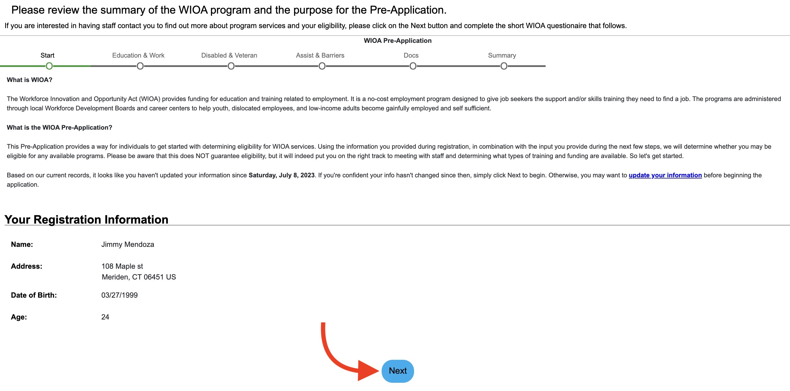

A Comprehensive Guide for Customers: Applying for the WIOA Program
Online
Welcome to the American Job Center, your gateway to the future of
employment! We greatly appreciate your interest in our services,
especially during these extraordinary times when our focus is on
ensuring the well-being of our valued customers, families, and the
broader community. As part of our commitment to health and safety, all
our employees are diligently adhering to the "Stay Safe, Stay Home"
Executive order outlined by the Governor. During this period, our
dedicated team has been working remotely to continue delivering
unparalleled assistance.
To maintain the highest level of customer service, we are thrilled to
introduce our new virtual intake and enrollment module, accessible
through CTHires (www.CTHires.com). If you're still enthusiastic about
pursuing the WIOA program, we invite you to take the following steps:
1 / 5
Step 1: Registration and Account Creation
Visit the link below to register for a CTHires account. Select the
"Individual" option and choose your preferred language.
2 / 5
Step 2: Creating Your Pre-application
Once your account is successfully created, your personalized
Dashboard will be at your fingertips.
-
Navigate to the center of your Dashboard and locate the "My
Benefits Plan" section.
- Click "Create WIOA Pre-application."
3 / 5

Step 3: Review and Preparation
-
Familiarize yourself with the "What is WIOA?" and "What is the
WIOA Pre‐application?" sections on the screen.
-
Follow the prompts, including providing your Education & Work
History, and click "NEXT."
-
As you complete each section, watch the green progression bar
track your progress.
Additional Information (if applicable)
-
If relevant, complete the "Disabled & Veteran" section and click
"NEXT."
-
If your registration details have changed, use the "Update your
registration information here" link to correct any demographic
information.
4 / 5
Step 4: Document Upload
To complete the application, ensure all required documents are
uploaded. Click the "Upload" link in the Action column to attach
documents to your application.
Required Documents for Eligibility:
- Social Security Card/ Documentation
- Birth Certificate
-
*Selective Service Documentation (*for males born on or after
January 1, 1960)
- Proof of Address
- Citizenship
- *Education Level
- *Education Status
*Note: For Selective Service registration
documentation, visit:
Selective Service Registration
*For those without Education Status or Level Proof:
Complete the Self Certification form attachment and provide a
personal statement explaining your educational background.
5 / 5
Final Step: Eligibility Review
Upon completing your WIOA Pre-application, you will proceed to the
Eligibility section.
- Review the Summary Report or Document List.
-
After submission, our Intake specialists will guide you through
the remaining steps and provide insights into your next course
of action.
At the American Job Center, we stand ready with an exceptional
team eager to support your journey forward. Feel free to reach out
to our call center at 860-406-3374 for any inquiries or
assistance.
Congratulations, You've Achieved It!
Your dedication to the WIOA program marks a significant milestone
in your career progression. We are proud to be part of your
journey.
❮
❯